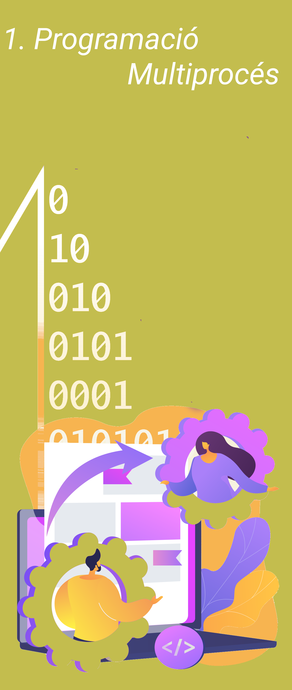

Resultats d'aprenentatge vinculats a la unitat
- RA1. Desenvolupa aplicacions compostes per diversos processos reconeixent i aplicant principis de programació paral·lela.
Criteris d'avaluació
- RA1.a) S'han reconegut les característiques de la programació concurrent i els seus àmbits d'aplicació.
- RA1.b) S'han identificat les diferències entre programació paral·lela i programació distribuïda, els seus avantatges i inconvenients.
- RA1.c) S'han analitzat les característiques dels processos i de la seua execució pel sistema operatiu.
- RA1.d) S'han caracteritzat els fils d'execució i descrit la seua relació amb els processos.
- RA1.e) S'han utilitzat classes per programar aplicacions que creen subprocessos.
- RA1.f) S'han utilitzat mecanismes per compartir informació amb els subprocessos iniciats.
- RA1.g) S'han utilitzat mecanismes per sincronitzar i obtenir el valor retornat pels subprocessos iniciats.
- RA1.h) S'han desenvolupat aplicacions que gestionen i utilitzen processos per a l'execució de diverses tasques en paral·lel.
- RA1.i) S'han depurat i documentat les aplicacions desenvolupades.